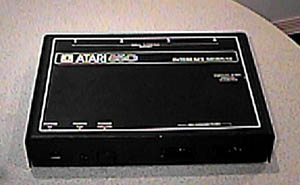
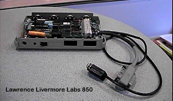

Other Atari 850's

The first versions of the Atari
850's used black metal cases with white graphics drawn onto the cases.
There are no physical differences in the actual motherboard contained inside
of the case compared to the standard 850's which used the beige plastic
cases. Atari at the time may not have decided how they were
going to package there peripherals or just hadn't finalized on how they
wanted the 850 case to look. Another possibility may have been
for RF reasons, Atari was overly concerned about passing FCC testing (note
the excessive use of thick die-cast shielding in the Atari 400/800 computers)
and may have packaged the 850 in all metal for fear that since it was an
interface system it may have generated excessive RF noise.

This 850 came out of Lawrence
Livermore Laboratories. It has a Z-80 processor, 6532 and does
not utilize the rear RS-232c ports of the unit even though they were included.
it has a IEEE-488 interface and well as a serial cable. The
unit was used to measure seismic readings.